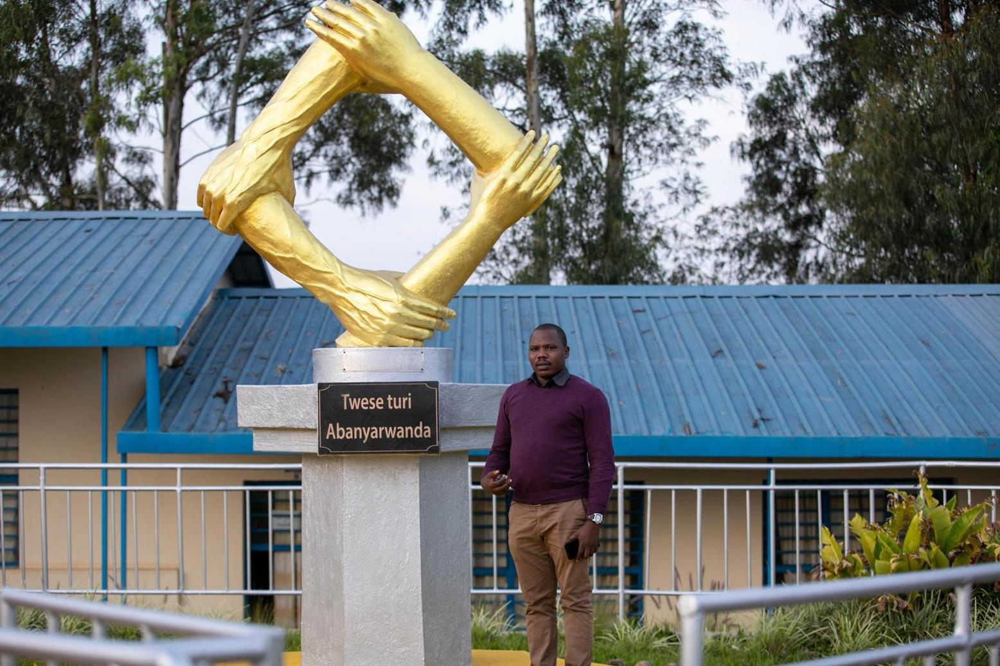
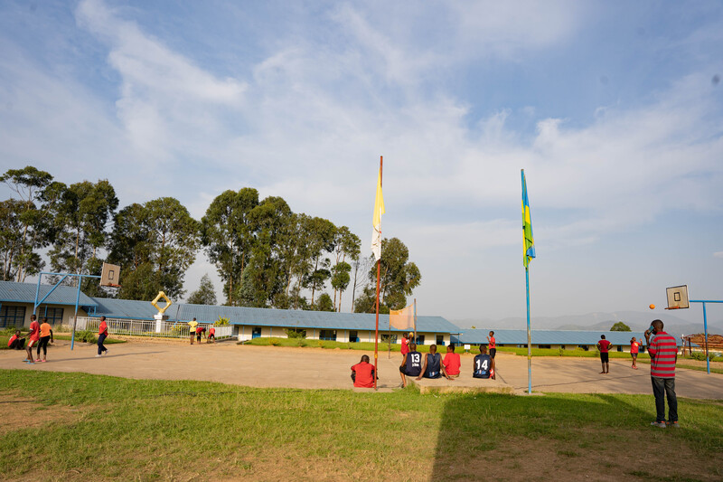
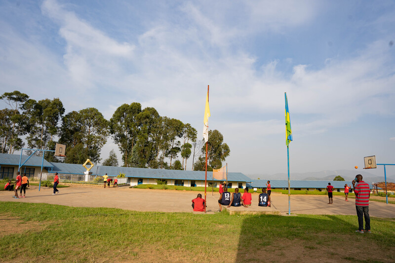
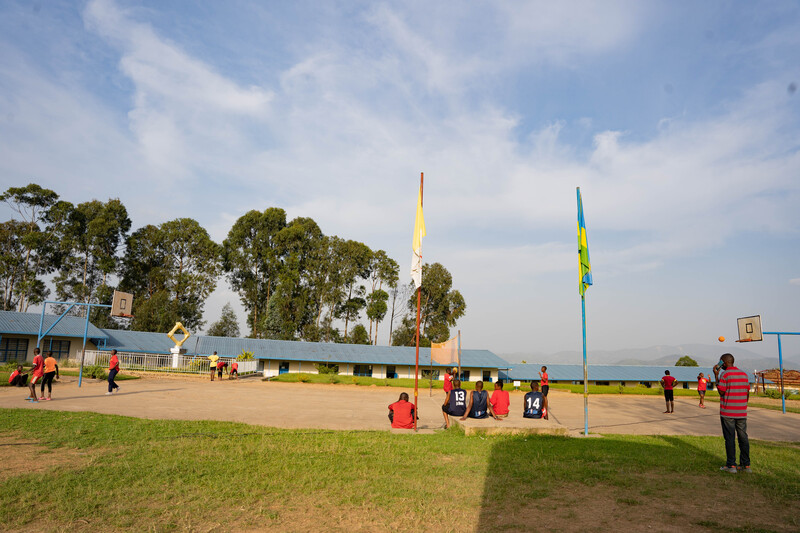

 


ABOUT US

ABOUT OUR SCHOOL
Nyange Secondary School was established in 1988/1989 by parents. It was in the former Commune Kivumu (current Ngororero District). But later in 1992, the school was handed over to Nyundo Diocese and got the name Nyange Secondary School. Since then, it has been private, but government aided school.